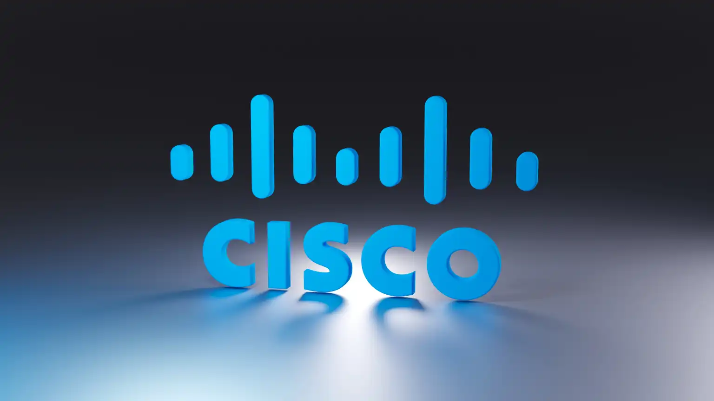

MES PROJETS
Découvrez mes réalisations en réseau, cybersécurité et gestion d'incidents.

Conception d'un réseau d'entreprise multisite
TerminéConception et configuration d'une infrastructure réseau répartie sur trois sites et 140 postes, sous Cisco Packet Tracer. Plan d'adressage IP en VLSM, VLAN et routage inter-VLAN, routage dynamique EIGRP, VTP, STP et NAT. Services DNS, DHCP, HTTP, TFTP et SNMP, accès distant sécurisé par SSH et commutateurs redondants sur chaque site pour la continuité de service.
Centre de services et gestion des incidents
TerminéMise en place d'un centre de services sur Zoho Desk : configuration des rôles et des autorisations, comptes clients, canaux de communication et base de connaissances. Traitement d'incidents postes et réseau sous Windows : comptes désactivés, réinitialisation de mots de passe, autorisations NTFS, partages réseau, pilote de carte manquant et conflit d'adresses IP.